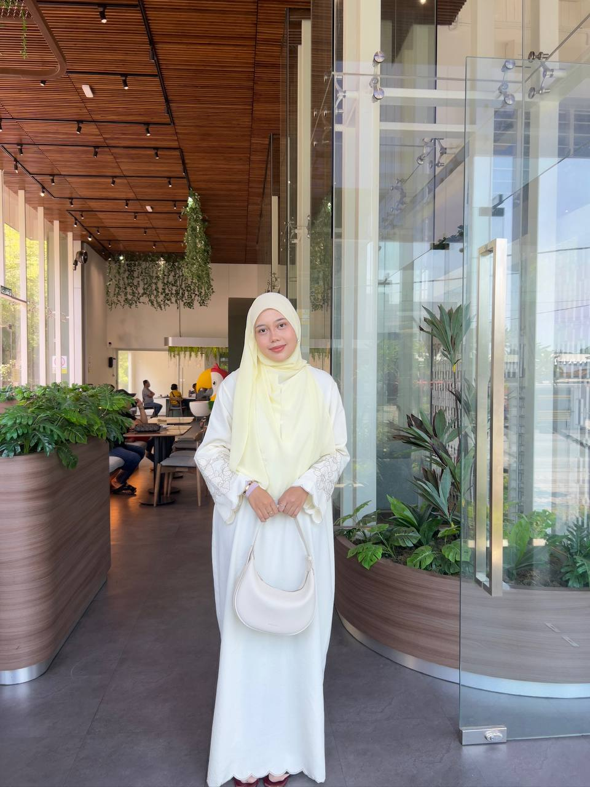
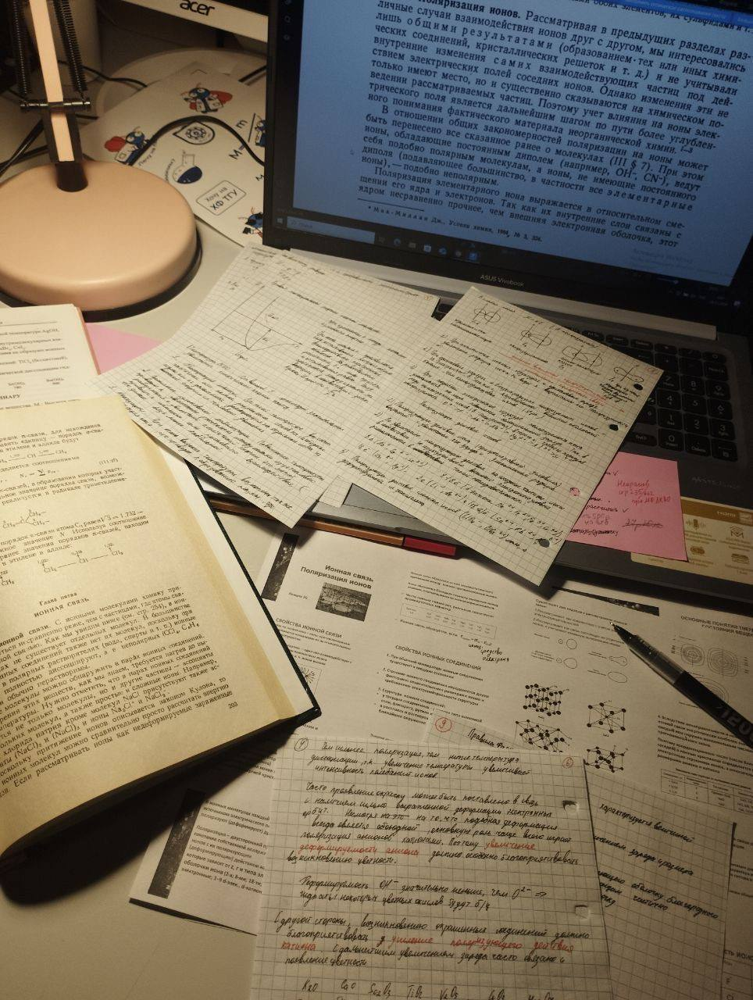

Things I Love 💗
🌅 Sunsets
🎧 Soft music
🌊 Ocean breeze
Name: Nur Farah Izni Binti Kharuazman
Nickname: Farah
Age: 20
State: Kedah Darul Aman
Nationality: Malaysia
Gender: Female
Date of Birth: 28 July 2006
Religion: Islam
Course: Library Informatics
My Vision 🌟
To become a knowledgeable individual in information management.
My Mission 🎯
• Improve skills • Stay creative • Achieve success

I am currently a student pursuing a Diploma in Library Informatics under the Faculty of Information Management.
Since a young age, I have always been passionate about reading, especially novels, which gradually developed my interest in knowledge and information.
What began as a simple hobby has now grown into a meaningful academic journey where I learn how to manage, organise, and explore information effectively in today’s digital world.
Throughout my studies, I have gained valuable knowledge and skills that help me understand the importance of information in our daily lives and how it can be used to benefit individuals and communities.
This course has also shaped me into a more responsible, organised, and detail-oriented person.
As an individual, I would describe myself as calm, creative, and highly motivated.
I enjoy learning new things and continuously improving my skills, especially in digital design and web development.
I believe that every small step I take today plays an important role in shaping a better and more successful version of myself in the future.
Despite the challenges I may face along the way, I always try my best to stay positive and keep moving forward.
With passion, consistency, and determination, I hope to continue growing, achieving my goals, and contributing positively to the field of information management.
Click here to explore more about me
My Skills
HTML 85%
★★★★★
CSS 80%
★★★★☆
JavaScript 65%
★★★☆☆